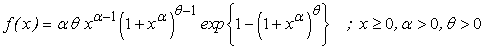

![[gpweibull_ex0]](gpweibull_ex0.bmp) Generalized Power Weibull Model
Generalized Power Weibull Model

model
{
for( i in 1 : N )
{
x[i] ~ dgp.weib(alpha, theta)
}
# Prior distributions of the model parameters
alpha ~ dgamma(0.001, 0.001)
theta~ dgamma(0.001, 0.001)
}
The data set gives 100 observations on breaking stress of carbon fibres,Nichols and Padgett(2006).
Nichols, M.D. and W.J. Padgett, W.J. (2006). A bootstrap control chart for Weibull percentiles, Quality and Reliability Engineering International , 22, 141-151.
Data ( click to open )
Inits for chain 1 Inits for chain 2 ( click to open )
Results
![[gpweibull_ex6]](gpweibull_ex6.bmp)